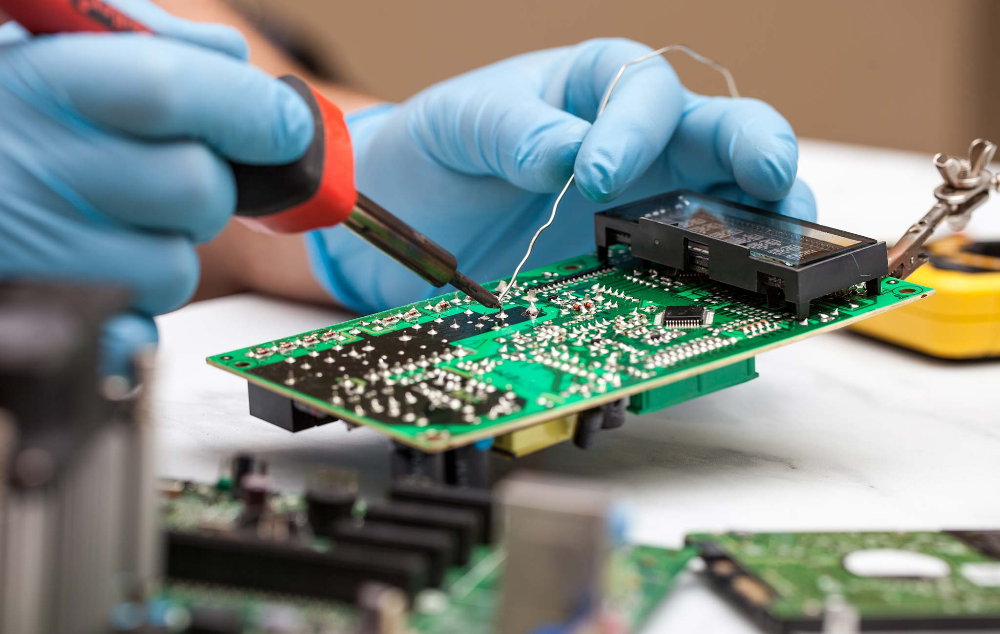

How to Teach Yourself to Solder
The easiest way to learn how to solder is to just do it and not worry about mistakes. You WILL make mistakes. So before you try and fix something you really want fixed, I recommend starting out with “learn to solder” kits. They come with instructions on how to solder their kits as well.
What You Need
| Item | Description | Price (2023) |
|---|---|---|
| Soldering Kit | Comes with most of the tools you need (adjustable temp iron HIGHLY RECOMMENDED) | $7-20 (cheap stuff) |
| Learn-to-Solder Kit | Teaches you the basics of soldering | $15+ |
| Table Fan | Blows unhealthy flux fumes away | $10+ |
| Tip Cleaner (can use wet/damp sponge) | Keeps the soldering tip clean and usable | $6+ |
| Helping Hands (opt.) | Holds your project steady while you solder to it | $10+ |
| Solder Wick (opt.) | Used for de-soldering. You’ll want this eventually | <$5 |
Soldering is Really Easy
All you really do is heat up a pin and then add solder to the pin. This can take ~10 seconds, so be patient and keep the iron touching the pin. I HIGHLY RECOMMEND getting a soldering iron that can change the temperature. There’s many approaches to temperature. I typically go at about 800-850F on my iron and move quickly. If I’m working on something more delicate and heat-sensitive like LED strips, I use 550-650F.
De-Soldering is NOT Easy
Soldering is easy. De-soldering is REALLY hard in comparison. One way to de-solder is counter intuitive. Add a whole bunch of solder to the pins, place solder wick on top, heat up the wick with your iron until all the solder is absorbed.
The other more easy method (assuming what you’re removing has 2 legs/pins) is heat 1-2 legs at a time and pull from the bottom.
Note: this article doesn’t cover surface mount soldering. That's a bit more advanced and will be an article for a later time.